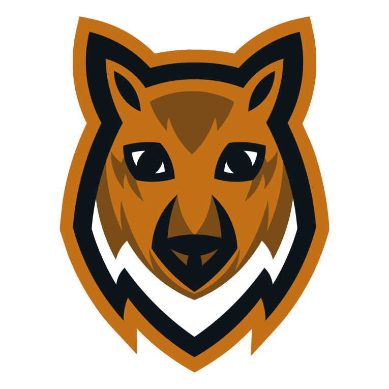

<mat-drawer-container class="drawer-container" autosize>
  <mat-toolbar color="primary" *ngIf="innerWidth >= 600">
    
    <button mat-button class="navitem" *ngFor="let link of links" [routerLink]="link.url" >
      {{link.title}}
    </button>
    <span class="spacer"></span>
    <button mat-raised-button color="accent" class="navitem margin-left" routerLink="download" style="margin-right: 15px" >
      <mat-icon class="material-icons-round">get_app</mat-icon> Download
    </button>
    <button mat-icon-button matTooltip="Profil" routerLink="login">
      <mat-icon>person</mat-icon>
    </button>
  </mat-toolbar>
  <mat-toolbar color="primary" *ngIf="innerWidth <= 599">
    <button mat-icon-button (click)="drawer.toggle()">
      <mat-icon>menu</mat-icon>
    </button>
    <span class="spacer"></span>
    
    <button mat-icon-button matTooltip="Profil" routerLink="login">
      <mat-icon class="material-icons-round">person</mat-icon>
    </button>
  </mat-toolbar>

  <mat-drawer #drawer class="sidenav" mode="over">
    <mat-nav-list>
      <a mat-list-item [routerLink]="link.url" *ngFor="let link of links"> {{ link.title }} </a>
    </mat-nav-list>
  </mat-drawer>


  <router-outlet></router-outlet>
  <br>
  <br>
  <br>


  <div class="footer">
    &copy; CubeMod 2020 - Website made by Nachwahl
  </div>

</mat-drawer-container>


